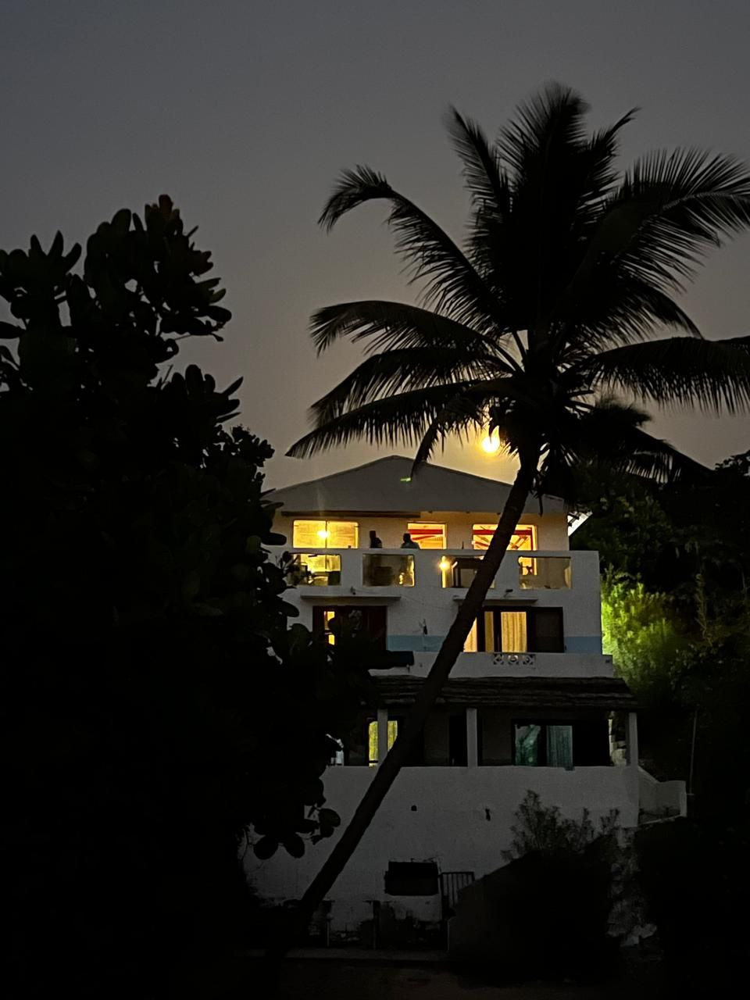
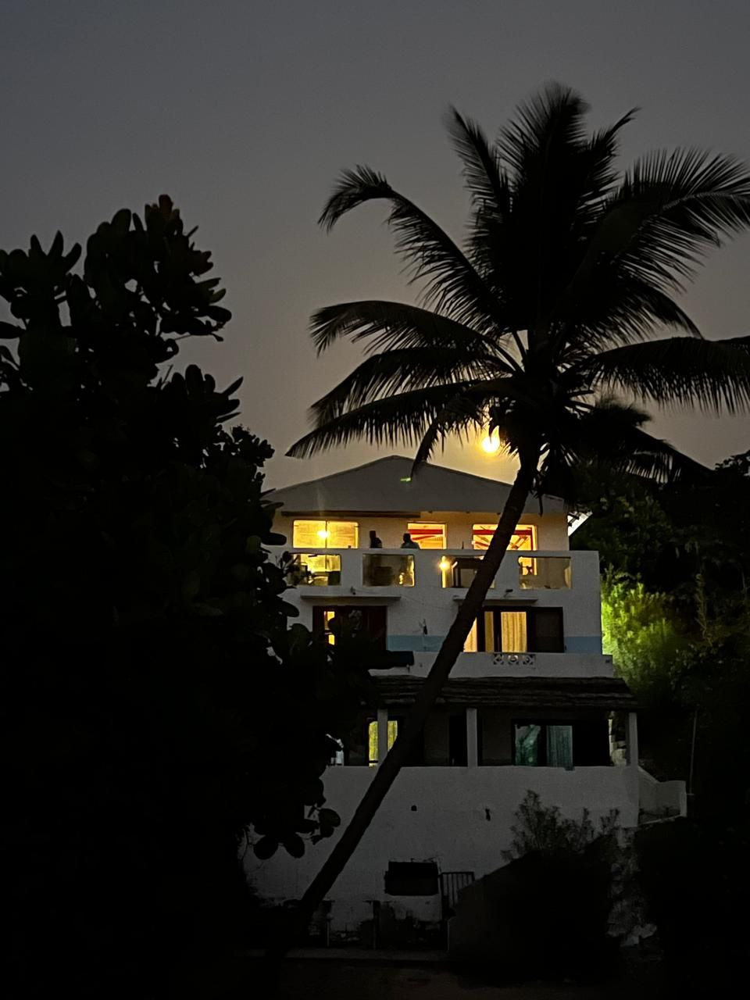
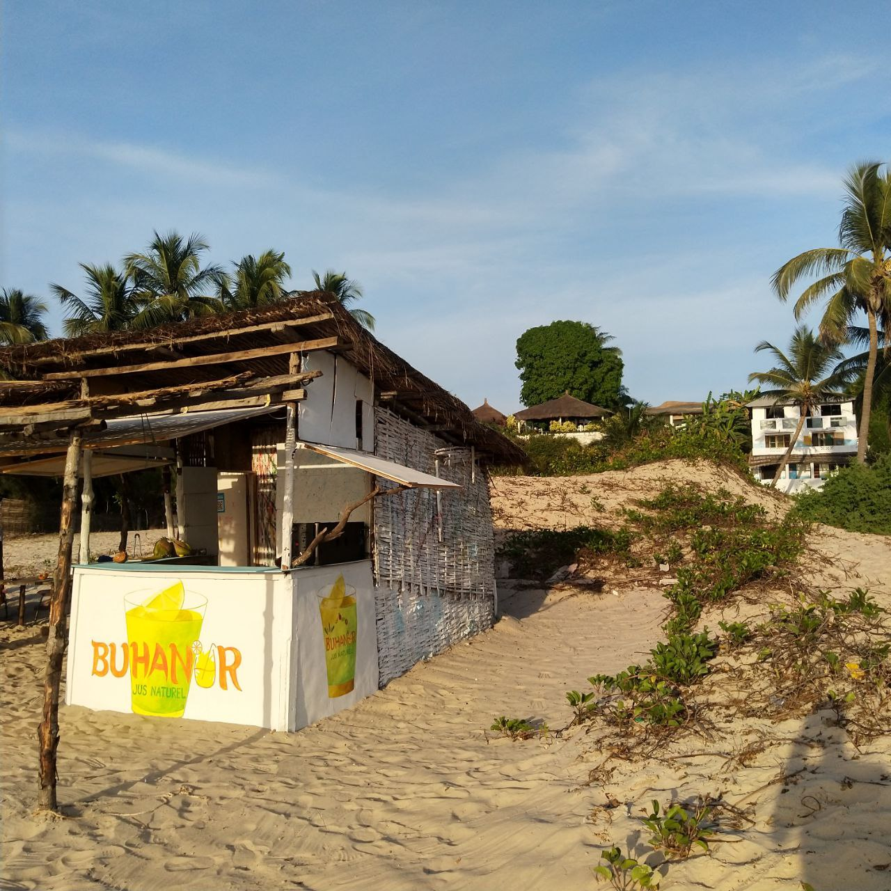
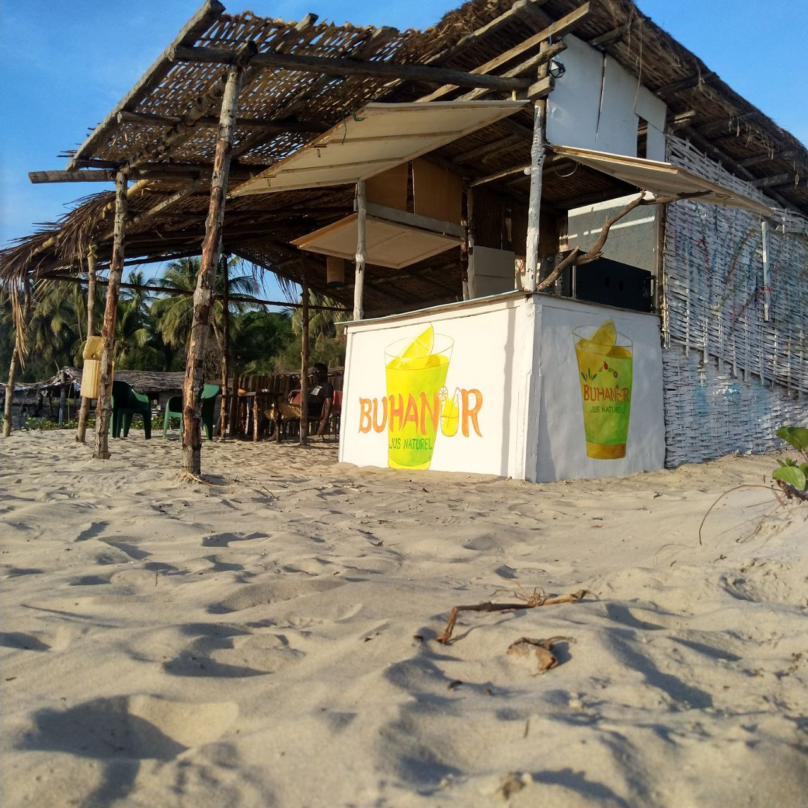
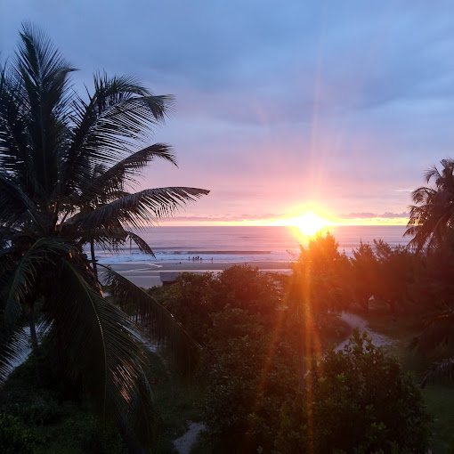
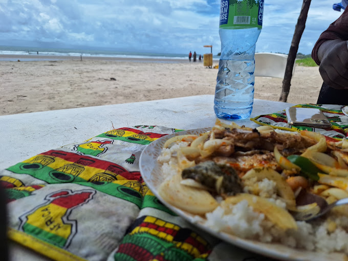
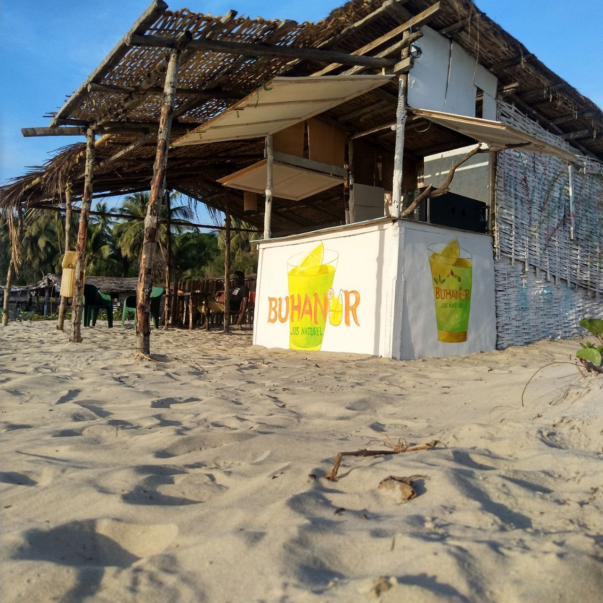
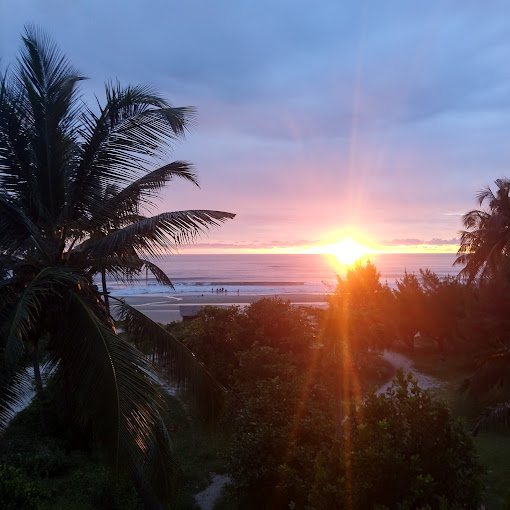
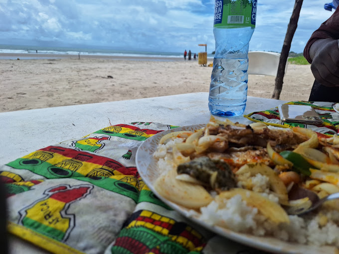

BUHANOR
L'EVASION CASAMANCAISE AU BORD DE L'OCEAN
Bienvenue à Buhanor , un véritable havre de paix niché au cœur d'une nature luxuriante, où le temps semble suspendu et les soucis s'évanouissent au son des vagues caressant le rivage. Imaginez-vous vous réveiller avec le doux murmure des vages, le soleil levant embrasant l'horizon de couleur chaudes. AU Campemenet BUHANOR , c'est la promesse d'un séjour authentique et ressourçant, au coeur de Cap Skirring. Nos chambres ventilées, véritable havre de paix, offrent une vue imprenable sur l'océan, vous invitant à la contemplation et à la détente.
Laissez-vous envoûter par la beauté brute de la nature environnante, où la plage s'étend à perte de vue et où les couchers de soleil sont de véritables spectacles. Goûtez à la convivialité casamançaise, à travers nos repas savoureux et nos moments de partage.
Buhanor , c'est bien plus qu'un Campement, c'est une expérience immersive, une parenthèse enchantée où le temps semble suspendu. Venez vivre la magie de Cap Skirring avec nous
Nos Chambres
Vue sur l'océan depuis les chambres
Réveillez-vous avec une vue imprenable sur l'océan depuis votre chambre. Nos hébergements, conçus dans le respect de l'environnement, vous offrent un confort simple et chaleureux. Un cadre idéal pour vous ressourcer et profiter pleinement de vos vacances à Cap Skirring.
 


Votre Évasion Tropicale en Casamance
Découvrez Buhanor, un havre de paix en Casamance, où nature et convivialité se rencontrent. Savourez des jus exotiques, détendez-vous sur nos plages et explorez la culture locale. Un séjour inoubliable vous attend dans ce paradis casamançais.
 






L'Évasion Tropicale de Vos Rêves, Où la Nature et la Convivialité Se Rencontrent
Évadez-vous à Buhanor, un havre de paix où nature et convivialité se rencontrent. Réveillez-vous au son des vagues, savourez des jus exotiques (bissap, orange, baobab, passion) et détendez-vous sur nos plages de sable fin. Découvrez la cuisine locale, explorez la nature et créez des souvenirs inoubliables

Réservez votre séjour dès maintenant !
Retrouvez l'essentiel et reconnectez-vous à la nature au campement Buhanor. Réservez dès maintenant votre séjour et laissez-vous séduire par la simplicité des lieux, l'authenticité des rencontres et la beauté des paysages. Un retour aux sources garanti !
Contactez-nous pour plus d'informations